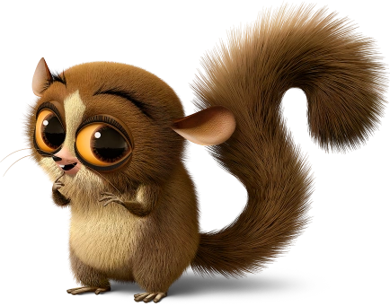

Mouse lemour mort the unkown demon
Mort is seemingly a cute dimwited mouse liemer when infact he is a Sky god and death himself
you see he has multiple personallitys and is confirmed to be a multiversal being but his one weekness is juliens feet. Mort is a being multiple races like star fish woodchips lemour bear
but he does have a weakness king juliens feet or anyfoot that looks like it. My thery is well mort is a being of unown origin but to understand this wild therium i shall take
you to the begining of all hial king julian becouse this is where all the evidence shall lay you see Mort in the beging was just a small lemour who loved king julien but after the foosa
attacked King julian saved him with his FEET after that he was obsessed he and i quote kissing staring and corresing them
